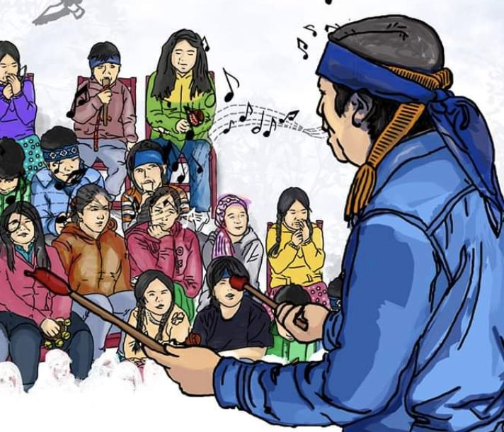

Guía 1: chalin ka üy
Grafemario, saludos según la persona, formas de estar y tu presentación en ocho partes.
Guía 2: inche, eimi, fey
Quién habla, a quién y de quién. Conjugación en indicativo singular con juegos para practicar.
Clases
Las presentaciones de cada kimeltun para revisar o descargar.
Chumgechi kimürkei che kagelu kewünCómo se aprende otra lengua

ZugunLa lógica gramatical siempre se queda corta. Lo primero es hablar.
AllkütunEscuchar y decir las palabras en distintas tonalidades ayuda a aprender los sonidos.
Az zugunEvita traducir palabra por palabra: cada lengua tiene su propia forma.
Cómo usar las guías
Cada guía tiene explicaciones, actividades que se revisan solas y un botón para guardarla en PDF. Si tu teclado no tiene ü o ñ, al escribir aparecen dos botones en la esquina inferior derecha.
Lee todo en voz alta. Y cada semana, practica con alguien que hable: es la parte más importante.